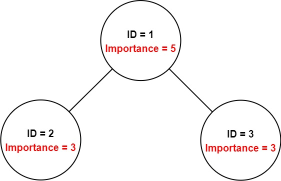
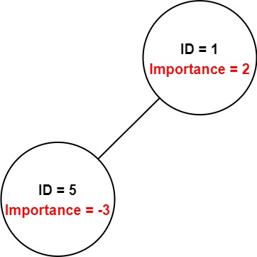

690. 员工的重要性
哈希表建 id→员工 索引，从目标 id DFS：每人的答案 = 自己的重要度 + 各下属递归之和。
思路
- 输入是无序数组，先花 O(n) 建
id → 员工哈希表，之后找人不用再扫。 dfs(id)：重要度先加上自己，再对每个直系下属递归累加，返回子树和。- 重要度可能为负，但求和照常加，不需要特判。
图解
最优解
1import java.util.*;2 3// 力扣判题机自带 Employee 的定义，这里补上以便本地编译4class Employee {5 public int id;6 public int importance;7 public List<Integer> subordinates;8}9 10class Solution {11 public int getImportance(List<Employee> employees, int id) {12 // 先把 id → 员工 建好索引，DFS 时 O(1) 找人13 Map<Integer, Employee> map = new HashMap<>();14 for (Employee e : employees) map.put(e.id, e);15 return dfs(map, id);16 }17 18 // 员工 id 连同整棵子树的重要度之和19 private int dfs(Map<Integer, Employee> map, int id) {20 Employee e = map.get(id);21 int sum = e.importance;22 for (int sub : e.subordinates) {23 sum += dfs(map, sub);24 }25 return sum;26 }27}题目
你有一个保存员工信息的数据结构，它包含了员工唯一的 id ，重要度和直系下属的 id 。
给定一个员工数组 employees，其中：
employees[i].id是第i个员工的 ID。employees[i].importance是第i个员工的重要度。employees[i].subordinates是第i名员工的直接下属的 ID 列表。
给定一个整数 id 表示一个员工的 ID，返回这个员工和他所有下属的重要度的 总和。
示例 1：

输入：employees = [[1,5,[2,3]],[2,3,[]],[3,3,[]]], id = 1 输出：11 解释： 员工 1 自身的重要度是 5 ，他有两个直系下属 2 和 3 ，而且 2 和 3 的重要度均为 3 。因此员工 1 的总重要度是 5 + 3 + 3 = 11 。
示例 2：

输入：employees = [[1,2,[5]],[5,-3,[]]], id = 5 输出：-3 解释：员工 5 的重要度为 -3 并且没有直接下属。 因此，员工 5 的总重要度为 -3。
提示：
1 <= employees.length <= 20001 <= employees[i].id <= 2000- 所有的
employees[i].id互不相同。 -100 <= employees[i].importance <= 100- 一名员工最多有一名直接领导，并可能有多名下属。
employees[i].subordinates中的 ID 都有效。
题面取自力扣当前版本。
数据快照 2026-11-04。题面版权归力扣所有，本站点仅供本人学习使用，请勿对外发布。